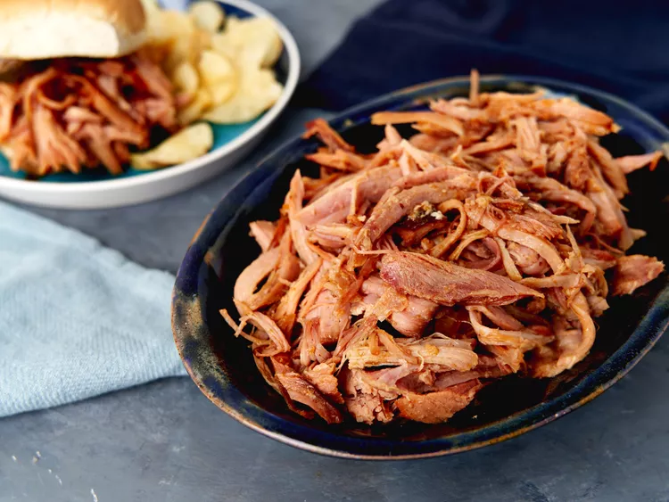

Oven Baked Ham Recipe

Description
Oven baked pulled ham cooks low and slow, and then shreds easily for sandwiches.
Sweet, spicy barbecue sauce and BBQ rub provide plenty of flavor.
Ingredients
- Bone-in ham
- Whole Grain Mustard
- Liquid smoke
- Brown sugar barbecue rub
- Sweet and spicy barbeque sauce
- Apricot preserves
How to cook
- Preheat oven, stir mustard and liquid smoke ina bowl. Place ham, cover with foil
- Bake for 2 hours
- Remove pan from oven, spread evenly, cover with foil
- Further bake